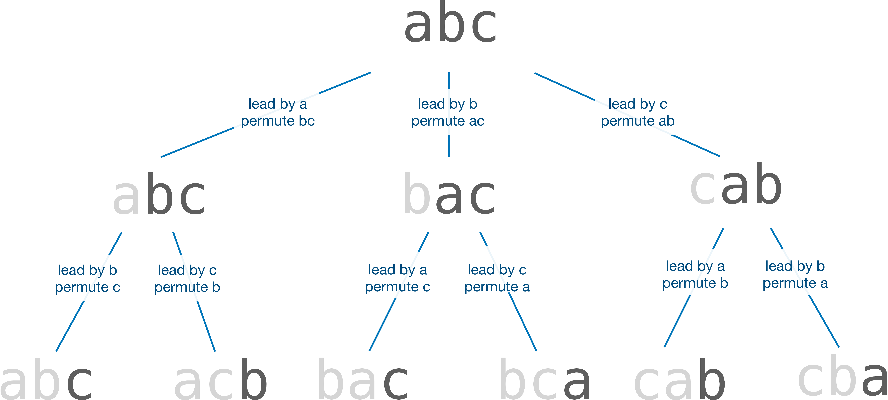

Unit 24: Permutations
Learning Objectives
After taking this unit, students should
- be familiar with using recursion to generate all possible permutations of a given array
Generating Permutations
We have been using recursions to either compute or search for a solution to a problem. In this unit, let's look at another useful application of recursion: to generate all possible permutations or combinations of items.
Let's see a simple example of this: generate all permutations of the characters in a string of length \(n\). Let's say we want to permute the string abcd (\(n = 4\)). We get the following 24 permutations.
1 2 3 4 5 6 | |
For simplicity, we assume that there is no repetition in the string. We leave the problem where there is repetition as an exercise in Problem 24.1.
Recursive Formulation
The recursive formulation of this problem is based on the following observation. If we consider a subset of all permutations that start with the same prefix of length \(k\), then their suffixes are permutations of length \(n-k\).
Let's say we consider the prefix a in the example above. The permuted strings that start with a are:
1 2 3 4 5 6 | |
Excluding a, the strings have suffixes:
1 2 3 4 5 6 | |
which are the six possible permutations of the string bcd.
Let's consider the prefix bc in the example above. The permuted strings that start with bc are:
1 2 | |
Excluding bc, the strings have suffixes:
1 2 | |
which are the two possible permutations of the string ad.
This observation gives rise to a simple recursive solution: To generate all possible permutations of a string of length \(n\): \(a_0a_1..a_{n-1}\), we loop through every character \(a_i\) in the string and generate permutations with \(a_i\) as the leading character. To generate permutations with \(a_i\) as the leading character, we simply recursively generate all possible permutations of a string of length \(n-1\): \(a_0..a_{i-1}a_{i+1}..a_{n-1}\).
The trivial case is when we generate the permutation of a string with one character. There is only one possible permutation.
For example, consider a string length 3, abc.
- We start with
aas the leading character and generate all the permutations of the stringbc. We get two permutationsabcandacb. - The next character in the input string is
b. We now makebthe leading character and generate all permutations of the stringac. We getbacandbca. - The last character in the input string is
c. We similarly generate the permutationscabandcbaby consideringcas the leading character and permutingba.
Now, let's consider a longer example, say a string of length 5, abcde.
- Just like above, we start with
aas the first character and permutebcde. - As we recursively permute
bcde,aremains part of the prefix. - To recursively permute
bcde, we first fixbas the leading character (butbis the second character inabcde) and permutecde. The prefix isab. - The next step in permuting
bcdeis to considercas the leading character. The prefix is nowac, and we permute the rest of the stringbde.
As we go deeper into the recursion, the prefix grows longer. When we reach the depth of \(n-1\), there is only one character to permute. We have completed generating one possible permutation of the string. We can print out the permutation at this point and continue with the rest of the permutation.
The figure below illustrates the process

The Code
The idea above is implemented as the following. The function permute takes in the array a to permute, the length len of the array, and the location curr, where the substring a[curr] to a[len - 1] is what this function will permute. The function will print out all permutations of a where a[0] to a[curr - 1] are fixed as the prefix and a[curr] to a[len - 1] are permuted.
1 2 3 4 5 6 7 8 9 10 11 12 13 14 15 16 17 18 19 20 21 22 | |
Lines 12-14 above correspond to the base case, where we have reached the end of the string, and there is only one character left to permute. Since there is only one possible permutation, we only need to print out the permuted string.
Line 19 permutes the remaining string, a[curr + 1] to a[len - 1], with character a[curr] intact. Lines 17-21 is a for loop that loops through all characters a[curr + 1] to a[len - 1], and swaps each one to the position of a[curr], and recursively permutes the string a[curr + 1]..a[len - 1]. When we are done, we swap back the original a[curr], this is to ensure that the string remains unchanged after permute is called.
Running Time
How efficient is the function permute?
Let the running time of permute when given a string of length \(n\) be \(T(n)\). Each invocation of permute loops through \(n\) characters, and for each character, calls permute recursively on a string of length \(n-1\).
So, we have:
When we reach the base case, we have \(T(1) = n\) since we need to print out the string of length \(n\). This happens when \(k = n - 1\). Therefore,
The running time for permute is, therefore, \(O(n \cdot n!)\).
Problem Set
Problem Set 24.1
In the code above, we assume that the string contains distinct characters. If there are duplicate characters in the string, duplicate permutations will be generated. For instance, if the input is aaa, the code above would print aaa six times.
We can fix this by making a small change to the function permute above so that it does not generate duplicate permutations. This can be done by adding a condition (Line A). Write a boolean function that we can call in Line A to check if we should continue to permute the rest of the string, and therefore avoid generating duplicate permutations when the input string contains duplicate characters.
1 2 3 4 5 6 7 8 9 10 11 12 13 14 15 | |
Appendix: Complete Code
1 2 3 4 5 6 7 8 9 10 11 12 13 14 15 16 17 18 19 20 21 22 23 24 25 26 27 28 29 30 31 32 33 34 35 36 | |